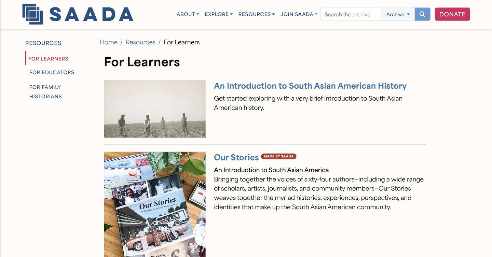
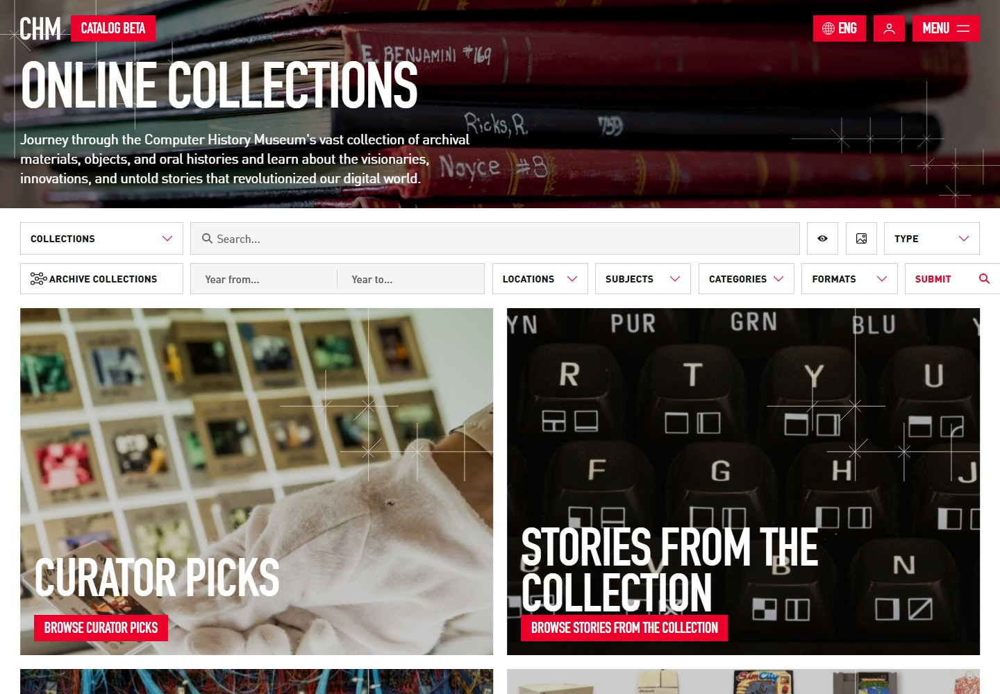
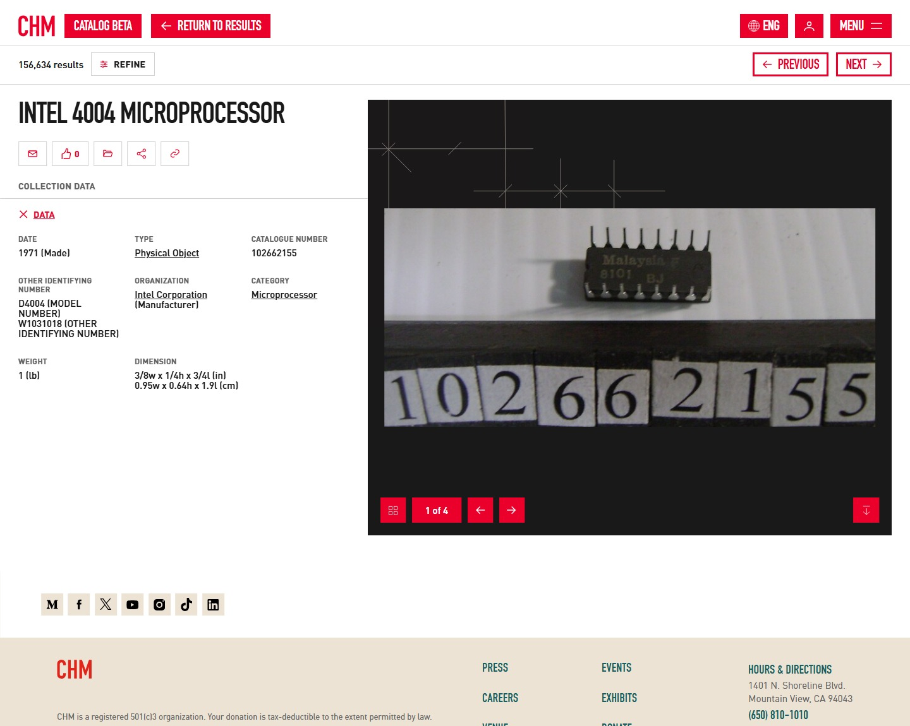

August 2, 2026 · Prompt #3
Whose Knowledge Gets Preserved? Building a Semiconductor Labor Archive Through Two Models
When I look at a semiconductor chip, I usually see the finished object: a small piece of technology that powers something much larger. What I do not immediately see are the people who designed it, assembled it, tested it, or built the systems around it. That gap is what interests me about archival work. While studying different approaches to preservation, I have been thinking about what kind of archive I would want to create for semiconductor workers. Looking at SAADA and the Computer History Museum collection has helped me understand how much an archive's choices shape the stories future researchers are able to find.

The South Asian American Digital Archive (SAADA) gives me a strong example of how personal experiences can become part of historical memory. The archive documents migration stories, family histories, and community experiences that might otherwise disappear from traditional historical records. One reason this approach stands out to me is that it treats individual lives as meaningful historical sources.
Michelle Caswell's work on archives and record making helped me put words to why this matters. She argues that archival decisions involve questions of power, value, and representation. Reading her work changed how I think about what gets preserved. A record is never just something that exists waiting to be collected. Someone decides what is documented, how it is described, and whose perspective is included.
For my semiconductor labor project, I want to use that same attention to people's experiences. Semiconductor history is often organized around companies, inventions, and major technological breakthroughs. Those stories matter, but they leave out many of the workers whose labor made those developments possible. SAADA provides a model for including the experiences of people who are often missing from larger historical narratives.

The Computer History Museum collection shows a different approach to preservation. The collection contains a wide range of technological artifacts, including hardware, documents, and materials related to the development of computing. These objects provide important evidence about how technology changed over time. However, when I examine the collection with my semiconductor project in mind, I notice that the people connected to those objects are often harder to find.
Many records focus on technical details, companies, and creators. That information is useful, but it does not always explain the labor behind the technology. A chip's record might tell me when it was created, who manufactured it, or what system it belonged to. It may not tell me about the workers involved in production or the communities shaped by the industry.
This is where Murtha Baca's discussion of metadata becomes important. Metadata influences how objects are understood because descriptions guide researchers toward certain interpretations. Brückner and Isenstadt make a similar point about historical objects: objects require context to reveal their meaning. A semiconductor component cannot explain its own history. The archive has to provide the connections between the object, the people involved, and the larger social environment.

The difference between SAADA and the Computer History Museum points toward the kind of archive I want to develop. I want to combine the detailed documentation of technological objects with the personal histories of the workers behind them. A semiconductor archive needs records of inventions and products, but it also needs interviews, workplace experiences, migration stories, and community perspectives. These additions would create a fuller picture of how technology is actually produced.
The readings from this course have shaped how I approach this project. Caswell helps me think about who is included in historical records and why those choices matter. Baca's work reminds me that description systems influence how people access knowledge. Brückner and Isenstadt show why objects require interpretation and context. I also want to continue exploring community based archives such as the Tenement Museum's Your Story, Our Story project, the Wakasa Memorial collection, and Densho because they demonstrate how personal memories can become valuable historical resources.
My goal is to create an archive that recognizes both technological achievement and human labor. Semiconductor history is built from objects, but those objects are connected to people. Preserving those connections is what can make the history more complete.
Resources & Further Reading
- Baca, Murtha. "Introduction to Metadata." Getty Research Institute.
- Brückner, Martin, and Sandy Isenstadt. "The Elusive Archive in Material Culture Studies." In Elusive Archives: Material Culture Studies in Formation. Newark: University of Delaware Press, 2021.
- Caswell, Michelle. "The Making of Records." In Archiving the Unspeakable: Silence, Memory, and the Photographic Record in Cambodia. Madison: University of Wisconsin Press, 2014.
- Computer History Museum. Collections.
- Densho: Japanese American Incarceration and Japanese Internment.
- South Asian American Digital Archive (SAADA).
- Tenement Museum. "Your Story, Our Story."
- Wakasa Memorial Committee.